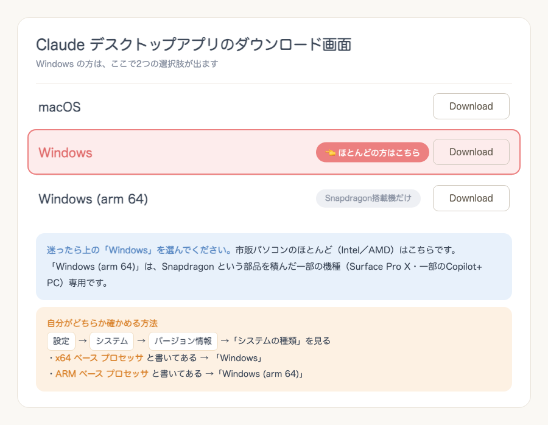

Claude Code に貼るのは 3つ だけ（スキル導入の2行＋初期設定）。分析・台本・動画編集の全スキルが、あなた仕様で使えるようになります。
claude.com か確認してからダウンロードしてください。claude と打っても Claude Code は動きます。ただしターミナルを使うのは、次の2つのときだけです：claude は別物です。片方を入れても、もう片方が使えるようにはなりません。「まだ入っていない」「claude と打っても反応しない」方は下の折りたたみへ👇claude で起動してください。デスクトップアプリの「Code」タブでは、動画編集スキルが動かないことをテストで確認しています（分析・台本・設計スキルはデスクトップアプリのままでOKです）。「Windows Terminal」はスタートメニューで「terminal」と検索すると出てきます（無い場合は Microsoft Store から無料で入ります）。Homebrew は Mac 専用なので、Windows の方は不要です。競合アカウント分析やバズ企画リサーチは、あなたのChromeでInstagramを開いて画面を読み取るという動き方をします。そのための部品が拡張機能「Claude」です。あなたがログイン済みのInstagramをそのまま見に行くので、新しくID・パスワードを入れる必要はありません。
① Chrome ウェブストアから追加する（下のリンクを開いて「Chromeに追加」→「拡張機能を追加」）
https://chromewebstore.google.com/detail/claude/fcoeoabgfenejglbffodgkkbkcdhcgfn
⚠️ 検索から入ると似た名前の偽物が混ざることがあります。上のリンクから入るのが安全です（提供元が Anthropic になっているか確認してください）。
② 拡張機能にログインする
Chrome右上のパズルのピース🧩をクリック →「Claude」を選び、いつものアカウントでログインしてください。ピン留め（📌）しておくと、次から一発で開けます。
③ Chrome で Instagram にログインしておく
分析スキルは「あなたが見ている状態のInstagram」を読みます。Chromeで instagram.com を開いてログイン済みにしておいてください。
④ 初めて使うときは「許可」を聞かれます
スキルがInstagramを見に行くとき、拡張機能が確認を出します。「許可」を選べばOKです。
💡 Claudeの有料プラン（Pro など）が必要です。うまく動かないときは、Claude Code に「Chrome拡張がつながっているか確認して」と聞くと、状態を調べて直し方を教えてくれます。
ダウンロードページ（https://claude.com/ja-jp/download）を開くと、Windows だけボタンが2つ並んでいて迷います。結論から言うと 上の「Windows」でOK です。

・「Windows」…市販パソコンのほとんど（Intel／AMD）はこちら。迷ったらこれを選んでください。
・「Windows (arm 64)」…Snapdragon という部品を積んだ一部の機種だけ（Surface Pro X・一部の Copilot+ PC）。
自分がどちらか確かめたいとき：
設定 → システム → バージョン情報 を開き、「システムの種類」を見てください。
・x64 ベース プロセッサ → 「Windows」
・ARM ベース プロセッサ → 「Windows (arm 64)」
💡 もし間違えて入れてしまっても、アプリが起動しないだけでパソコンは壊れません。その場合はもう片方を入れ直せば大丈夫です。
Claude で「ローカルセッションには Git が必要です」と赤字が出たら、Git というソフトが入っていないだけです。入れれば消えます。裏方のソフトなので、入れたあとに操作することはありません。
① スタートメニューで「terminal」と検索して「Windows Terminal」を開き、下を貼って実行してください。
winget install -e --id Git.Git
② 終わったら、Windows Terminal と Claude を「両方とも」いったん閉じて、Claude を開き直してください。赤い警告が消えていれば成功です。
③ winget が使えなかった場合は、公式サイトから直接入れられます：
https://git-scm.com/download/win
「64-bit Git for Windows Setup」をダウンロードし、出てくる画面はすべてそのまま「Next」で進めてOKです。終わったら Claude を開き直してください。
💡 Mac の方はこの作業は不要です（Git は最初から入っています）。
ほとんどの方はこの作業は不要です。デスクトップアプリの「Code」で全スキルが使えます。
必要なのは Windows で動画編集スキルを使う方と、どうしてもターミナルで動かしたい方だけです。
デスクトップアプリだけ入れていて、ターミナルで claude が使えないのはよくあることです（別のソフト扱いなので）。ターミナル版も使いたいときは、下の1行を入れるだけです。
【Mac の方】「ターミナル」アプリを開いて、下を貼って実行してください。
curl -fsSL https://claude.ai/install.sh | bash
【Windows の方】「Windows Terminal」を開いて、下を貼って実行してください。
irm https://claude.ai/install.ps1 | iex
終わったら、ターミナルを一度閉じて開き直してから claude と打ってください。Claude Code が立ち上がれば成功です。初回はログインを求められるので、いつものアカウントでログインしてください。
⚠️ 入れ終わったら、作業はデスクトップアプリに戻ってください。ここでインストールしたのは「ターミナル版」です。ターミナルの黒い画面のまま進めてしまう方が多いのですが、ふだんの作業はデスクトップアプリの「Code」が正解です（画面が見やすく、ファイルのやりとりも楽です）。ターミナルを使い続けてよいのは Windows で動画編集スキルを動かすときだけです。
Homebrew（ホームブリュー）は、動画編集に必要な部品を自動で入れてくれる道具です。1回入れれば、あとはずっと使えます。
① まず入っているか確認：Mac標準の「ターミナル」アプリを開いて、下を貼って実行。バージョン（例：Homebrew 4.x.x）が出たら導入ずみなので何もしなくてOKです。
brew --version
② command not found と出たら、下を貼って実行（公式のインストーラーです）。
/bin/bash -c "$(curl -fsSL https://raw.githubusercontent.com/Homebrew/install/HEAD/install.sh)"
途中で Macのログインパスワードを聞かれます。打っても画面には何も表示されませんが、そのまま入力して Enter で進みます。数分かかります。
③ 使えるようにする（この2行を忘れると「入れたのに見つからない」となります）。
echo 'eval "$(/opt/homebrew/bin/brew shellenv)"' >> ~/.zprofile
eval "$(/opt/homebrew/bin/brew shellenv)"
④ もう一度 brew --version を実行して、バージョンが出れば完了です。
💡 うまくいかないときは、その画面をスクショして Claude Code に貼り、「これどうすればいい？」と聞けば教えてくれます。
/plugin marketplace add izzzenk-ops/otolab-skills
/plugin install otolab-insta@otolab-skills
おとラボスキルを使うための初期設定をお願いします。以下を順番に実行してください。
1. ホームの「Documents/Claude/Projects」フォルダを作成する（すでにあればそのまま使う）。今後、分析報告書・台本などの成果物はすべてこの中に保存される。
2. 「Documents/Claude/CLAUDE.md」を次の内容で作成する（すでにあれば内容を壊さずにこのルールを追記する）：
- 成果物は必ず Projects/<プロジェクト名>/ の中に作る。Documents/Claude の直下にファイルを直接置かない
- 一時ファイルはセッションのscratchpadを使い、このフォルダには置かない
- ファイルやフォルダの削除・移動は勝手にせず、必ず提案して許可を得てから行う
3. 私に1問ずつ質問しながら「Documents/Claude/Projects/発信プロフィール/profile.md」を作成する。聞いてほしい項目：
- 名前（ニックネームOK）
- Instagramのアカウント名（まだなければ「これから」でOK）
- 発信ジャンル
- 誰に向けて発信するか（ターゲット）
- 発信の目的（フォロワーを増やしたい・集客につなげたい など）
- 口調・キャラの希望（あれば）
回答を profile.md にきれいにまとめて保存する。
4. 最後に、作成したフォルダ構成をツリーで見せて「初期設定完了」と報告する。
分析・設計・台本・動画編集の 全スキルがそのまま使えます。スキルは／（スラッシュ）では呼びません。ふだんのチャットに、こう話しかけるだけです：
このリールを分析して https://www.instagram.com/reel/○○○/otolab-insta: が必要です。/otolab-insta:bunseki-reel ❌ /bunseki（途中まで）／❌ /bunseki-reel（頭が抜けている）はエラーになります。/plugin marketplace update
claude で使ってください（アプリの「Code」タブでは動画編集だけ動きません）。編集が終わったらデスクトップアプリに戻ってOKです。